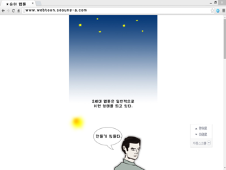

janu
Webtoons (Hangul: 웹툰) are a type of digital comic that originated in South Korea. While webtoons were mostly unknown outside of the country during their inception, there has been a surge in popularity internationally thanks in great part to most manhwa being read on smartphones. As digital manhwa have emerged as a popular medium, print publication of manhwa in South Korea has decreased. The amount of material published in webtoon form has now reached an equal amount as that published offline.
Origins and history
The Korean web portal Daum created a webtoon service known as Daum Webtoon in 2003 and was later followed by Naver with the launch of Naver Webtoon in 2004. These services regularly release webtoons that are available for free. According to David Welsh of Bloomberg, comics account for a quarter of all book sales in South Korea, while more than 3 million Korean users paid to access online manhwa and 10 million users read free webtoons. As of July 2014, Naver had published 520 webtoons while Daum had published 434. Since the early 2010s, services such as TappyToon and Spottoon have begun to officially translate webtoons into English while some Korean publishers like Lezhin and Toomics have begun to self translate their works.[ Examples of popular webtoons that have been translated into English are Lookism, Untouchable, Yumi's Cells, Tales of the Unusual, The God of High School, Noblesse, and Tower of God. In recent years, these webtoons have been gaining popularity in Western markets, rivalling Japanese manga.[ In the past, it was divided into two ratings: All (webtoon suitable for all ages) and 18 (No one under 18 is allowed to read this webtoon). From May 2019, the webtoon rating system was implemented. It is said that 10 platforms including Naver and Daum will participate. The ratings are expected to be △ All △ 12 years or older △ 15 years or older △ 19 years old (18 years old) or older
Generation Zero

Earliest webtoons were scanned original comics uploaded onto the Internet, usually formatted on a one-page
layout.
First generation
With the development of technology, authors were able to utilise flash animation effects.
Second generation

Enhanced preloading enabled later authors to adopt a vertical layout with scrolling. In contrast to
comics with a dense panel composition, scrolling brings new panels into view. This makes webtoons suitable
for gradual and continuous representation, allowing webtoon reading to become more fluid.
Third generation
With the advent of the smartphone and tablet, webtoons have also migrated to new platforms such as apps. There was also introduced sounds to imply further expressions and tones, as well as interactive motions to create excitement and bring attention to certain objects for the viewers.
Outside of Korea
The webtoon format has also expanded to other countries with many different distributors offering original and translated webtoons for users to read as well as offering platforms for anyone to upload their own webtoons.
China and Taiwan
In mainland China and Taiwan, webtoons along with web manhua have seen an increase in production and popularity since they are rarely published and just like in South Korea, have resulted in a resurgence and interest in the manhua industry as more content is consumed digitally. Almost all of the big webtoon portals in China are offered by the big internet companies in the country while in Taiwan the bigger webtoon publishers outside of the country like Comico, Toomics, and Line Webtoon are more popular since their services are available there.
South East Asia
Indonesia and Thailand have become big markets for the webtoon industry with both Naver (under Line Webtoon) and Comico offering both original webtoons and fully translated titles in the two countries. Some webtoons made in Indonesia and Thailand have even been translated and published outside of the countries like Eggnoid. Vietnam launched its first webtoon portal, Vinatoon, offering translated titles from Daum Webtoon and Mr. Blue with the intention of opening up another market.
Western countries
Indonesia and Thailand have become big markets for the webtoon industry with both Naver (under Line Webtoon) and Comico offering both original webtoons and fully translated titles in the two countries. Some webtoons made in Indonesia and Thailand have even been translated and published outside of the countries like Eggnoid. Vietnam launched its first webtoon portal, Vinatoon, offering translated titles from Daum Webtoon and Mr. Blue with the intention of opening up another market.
Japan
Indonesia and Thailand have become big markets for the webtoon industry with both Naver (under Line Webtoon) and Comico offering both original webtoons and fully translated titles in the two countries. Some webtoons made in Indonesia and Thailand have even been translated and published outside of the countries like Eggnoid. Vietnam launched its first webtoon portal, Vinatoon, offering translated titles from Daum Webtoon and Mr. Blue with the intention of opening up another market.